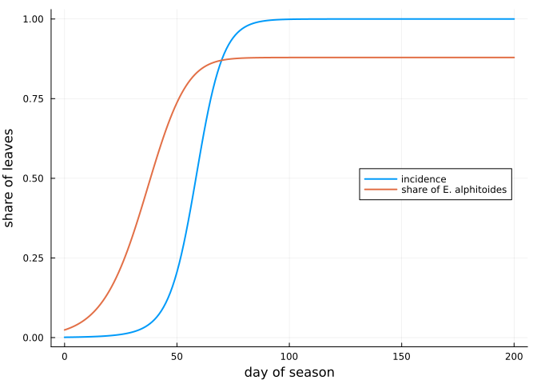
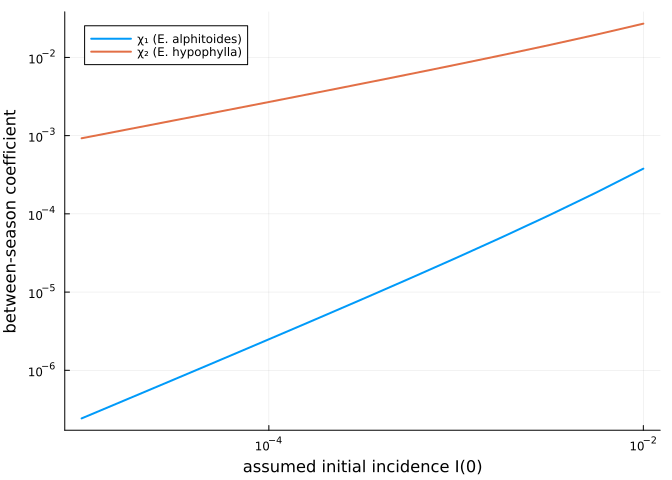

The seasonal model of Hamelin et al. (2016)
Simon Frost
Overview
Two powdery mildews share the leaves of European oaks: Erysiphe alphitoides, the common one, and E. hypophylla. Hamelin, Bisson, Desprez-Loustau, Fabre and Mailleret (2016, Ecosphere 7:e01517) explained their coexistence with a seasonal model. Within a season, both species infect a fixed pool of susceptible leaves; between seasons, the inoculum each carries over depends on its sporulating leaves at the end of the season. Fitted to species frequencies at Cestas (France) in 2009 and 2014, the model gave transmission rates β and between-season coefficients χ for each species (their Table 2).
This vignette implements the model exactly, reproduces Table 2, and shows what the fitted values imply: every leaf ends the season infected, and χ only restates the assumed initial incidence. The leaf-level model of the next vignette nests this one.
Setup
using PowderyMildew
using Plots
using PrintfThe model
Within season a, with S the susceptible leaves and I₁, I₂ the leaves infected by each species,
\[\frac{dS}{dt} = -S \sum_i \beta_i I_i, \qquad \frac{dI_i}{dt} = I_i(\beta_i S - \alpha),\]
over τ = 200 days. Between seasons, leaves are renewed (S₀ = 1) and the inoculum of each species is χᵢ Iᵢ(τ). The first infections of the next season follow from the share of leaves that escape all primary inoculum,
\[S(0) = S_0 e^{-H}, \qquad I_i(0) = S_0 (1 - e^{-H}) \frac{\chi_i I_i(\tau)}{H}, \qquad H = \sum_i \chi_i I_i(\tau).\]
HamelinProblem holds the within-season system and the annual map; the rates are per day. The season of 2014, with the parameters of Table 2’s first row, runs as follows.
I0 = 1e-3
F0 = 0.024 # initial share of E. alphitoides
p = HamelinParameters(; beta = [0.181, 0.083], chi = [2.75e-5, 0.008])
sol = solve(HamelinProblem(p, [F0, 1 - F0] .* I0; seasons = 3))
ts = 0:1:200
plot(ts, [incidence(sol, 1, t) for t in ts]; label = "incidence", lw = 2,
xlabel = "day of season", ylabel = "share of leaves", legend = :right)
plot!(ts, [frequency(sol, 1, t) for t in ts]; label = "share of E. alphitoides", lw = 2)
The epidemic saturates by about day 100. The rarer but faster E. alphitoides (β₁ ≈ 2β₂) rises from 2.4 % of infections at the start of the season to about 88 % at its end.
Reproducing Table 2
Table 2 reports no confidence intervals, and χ comes from the coexistence equilibrium. If the start of each season is a fixed point of the annual map, then χ follows in closed form from β, the initial frequency F₀ and the initial incidence I(0):
\[\chi_i = \frac{H I_i(0)}{\sum_j I_j(0) \, I_i(\tau)}, \qquad H = -\log\Big(1 - \frac{\sum_j I_j(0)}{S_0}\Big).\]
coexistence_chi computes it. From each row’s rounded β, F₀ and I(0) alone:
table2 = [("2014", 1e-3, 0.181, 0.083, 0.024, 0.878, 2.75e-5, 0.008),
("2014", 4e-4, 0.196, 0.098, 0.024, 0.877, 1.12e-5, 0.003),
("2009", 1.4e-4, 0.312, 0.089, 0.020, 0.994, 2.82e-6, 0.025),
("2009", 5.6e-5, 0.316, 0.112, 0.020, 0.994, 1.59e-6, 0.010)]
println("year I(0) χ₁ (computed / paper) χ₂ (computed / paper) F_τ (computed / paper) 1 - I(τ)")
for (year, I, b1, b2, F, Fτ, c1, c2) in table2
q = HamelinParameters(; beta = [b1, b2], chi = [0.0, 0.0])
chi = coexistence_chi(q, [F, 1 - F] .* I)
s = solve(HamelinProblem(HamelinParameters(; beta = q.beta, chi), [F, 1 - F] .* I))
@printf("%s %.1e %.2e / %.2e %.4f / %.3f %.3f / %.3f %.1e\n",
year, I, chi[1], c1, chi[2], c2, frequency(s, 1, 200.0), Fτ, 1 - incidence(s, 1, 200.0))
endyear I(0) χ₁ (computed / paper) χ₂ (computed / paper) F_τ (computed / paper) 1 - I(τ)
2014 1.0e-03 2.73e-05 / 2.75e-05 0.0081 / 0.008 0.879 / 0.878 4.1e-11
2014 4.0e-04 1.09e-05 / 1.12e-05 0.0033 / 0.003 0.882 / 0.877 4.9e-12
2009 1.4e-04 2.81e-06 / 2.82e-06 0.0261 / 0.025 0.995 / 0.994 5.4e-13
2009 5.6e-05 1.13e-06 / 1.59e-06 0.0078 / 0.010 0.993 / 0.994 6.5e-13The closed form reproduces the paper’s χ₁, χ₂ and final frequency Fτ to the rounding of the published β, except in the last row, whose season ends so close to F = 1 that χ₂ ∝ 1/(1 − Fτ) magnifies that rounding. Three conclusions follow.
- The rates are per day. With β per year, the frequency would not move within a season.
- The fitted seasons infect every leaf. The last column, the share of leaves still uninfected at the end of the season, is negligible in every fit. With α = 0 and a constant pool of leaves, the model describes species shares, not severity.
- χ restates the assumed I(0). Because I(τ) ≈ 1, the annual map gives Σᵢ χᵢ Iᵢ(τ) = H ≈ I(0), so each χᵢ is proportional to an initial incidence the authors fixed in advance, not to anything observed.
Holding β and F₀ at the 2014 values and varying the assumed I(0) shows the proportionality:
q = HamelinParameters(; beta = [0.181, 0.083], chi = [0.0, 0.0])
I0s = 10.0 .^ range(-5, -2; length = 13)
chis = [coexistence_chi(q, [F0, 1 - F0] .* I) for I in I0s]
plot(I0s, first.(chis); xscale = :log10, yscale = :log10, lw = 2, label = "χ₁ (E. alphitoides)",
xlabel = "assumed initial incidence I(0)", ylabel = "between-season coefficient", legend = :topleft)
plot!(I0s, last.(chis); lw = 2, label = "χ₂ (E. hypophylla)")
Both lines have slope one: a tenfold change in the assumed I(0) changes both coefficients tenfold, and the data on species frequencies cannot tell them apart.
The annual map
At the coexistence values of χ the start of the season is a fixed point, and every season begins where the first did. With the paper’s rounded χ instead, the start drifts slowly.
chi_star = coexistence_chi(HamelinParameters(; beta = p.beta, chi = [0.0, 0.0]), [F0, 1 - F0] .* I0)
fixed = solve(HamelinProblem(HamelinParameters(; beta = p.beta, chi = chi_star), [F0, 1 - F0] .* I0; seasons = 3))
for s in 1:3
u, v = fixed(s, 0.0), sol(s, 0.0)
@printf("season %d: coexistence χ, I₁(0) = %.4e, I₂(0) = %.4e; rounded χ, I₁(0) = %.4e, I₂(0) = %.4e\n",
s, u[2], u[3], v[2], v[3])
endseason 1: coexistence χ, I₁(0) = 2.4000e-05, I₂(0) = 9.7600e-04; rounded χ, I₁(0) = 2.4000e-05, I₂(0) = 9.7600e-04
season 2: coexistence χ, I₁(0) = 2.4000e-05, I₂(0) = 9.7600e-04; rounded χ, I₁(0) = 2.4165e-05, I₂(0) = 9.6636e-04
season 3: coexistence χ, I₁(0) = 2.4000e-05, I₂(0) = 9.7600e-04; rounded χ, I₁(0) = 2.4205e-05, I₂(0) = 9.5456e-04The likelihood
Hamelin et al. fitted β by a binomial likelihood of the counts of E. alphitoides among sampled colonies. frequency_loglikelihood evaluates it; the Cestas counts (their Appendix S1) are not reproduced here. With made-up counts, for illustration only:
days = [60.0, 100.0, 140.0, 180.0]
sampled = [40, 40, 40, 40]
alphitoides = [10, 25, 31, 35]
frequency_loglikelihood(sol, fill(1, 4), days, sampled, alphitoides)-51.71245033618421What this model cannot do
The model has no leaf phenology, no timing of primary infection, and no limit on infection short of every leaf. It can describe how the two species share leaves, but not how severe an epidemic is, when it starts, or where it spreads. The leaf-level model in the next vignette adds those, and reduces to this model in a tested limit.